무선설비기사 (2019-06-29 기출문제)
1과목: 디지털 전자회로
1. 다음 정류회로에 대한 설명을 틀린 것은?
- 반파정류회로는 입력신호의 주기와 출력신호의 주기가 동일하다.
- 중간탭 전파정류회로는 브릿지 전파정류회로보다 높은 출력전압을 얻을 수 있다
- 브릿지 전파정류회로의 PIV(Peak Inverse Voltage) 정격은 출력 전압과 동일하다
- 용량성 필터를 사용하여 맥동률을 감소시킬 수 있다.
(정답률: 65%)

2. 다음 브리지 정류회로에서 부하(R1) 10[Ω]에 평균 직류 출력전압이 10[V] 일 때, 각 Diode에 흐르는 피크전류값(Iｍ)은 약 얼마인가?
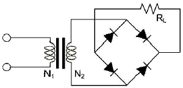
- 0.79 [A]
- 1.57 [A]
- 1.79 [A]
- 3.14] [A]
(정답률: 65%)
3. 교류입력전압의 변동이나 부하전류의 변동에 의해 직류출력전압이 변해도 항상 일정한 직류전압을 얻을 수 있는 회로는?
- 반파정류회로
- 전파정류회로
- 정전류회로
- 정전압회로
(정답률: 79%)
4. 다음과 같은 증폭기의 교류 입력전압의 크기가 20[mV]일 때, 교류출력전압의 크기는 얼마인가?
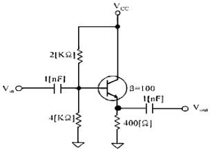
- 20[mV]
- 30[mV]
- 40[mV]
- 50[mV]
(정답률: 75%)
5. 다음 연산증폭기 회로에서 R1=50[kΩ], R2=100[KΩ], R3=10[kΩ], Rf=10[kΩ]이고, V1=3[V], V2=2[V], V3=8[V]일 때, 출력전압 Vo는?
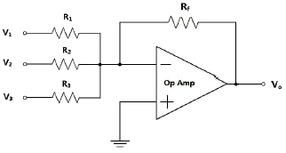
- -8.2[V]
- -8.4[V]
- -8.6[V]
- -8.8[V]
(정답률: 73%)
6. 다음 중 A급 전력 증폭회로에 대한 설명으로 틀린 것은?
- 입력 신호의 전 주기에 대하여 항상 비활성영역에서 증폭동작을 한다.
- 입력 풀력 파형은 일그러짐이 없이 똑같은 형태를 유지한다.
- 종단의 대신호 증폭에는 전력 손실이 크게 발생되므로 효율이 좋지 않다
- 직접 부하를 풀력에 접속하는 직접 결합방식과 변압기를경유하여 접속하는 변압기 결합방식으로 구분된다.
(정답률: 64%)
7. 다음 중 B급 SEPP 증폭기의 특징에 대한 설명으로 틀린 것은?
- IPT와 OPT 변압기가 필요없다.
- DEPP에 비해 TR의 출력전압이 작다.
- 특성이 동일한 PNP트랜지스터 또는 npn 트랜지스터를 사용한다.
- 동일 출력을 낼 수 있는 부하의 크기는 DEPP의 2배이다.
(정답률: 67%)
8. 인가되는 역전압의 직류전압에 의해 커패시턴스가 가변되는 소자를 이용하여 발진주파수를 가변하는 발진회로는?
- 윈-브리지 발진회로
- 위상천이 발진회로
- 전압제어 발진회로
- 비안정 멀티바이브레이터
(정답률: 56%)
9. 다음 그림과 같은 발진회로의 명칭은 무엇인가?
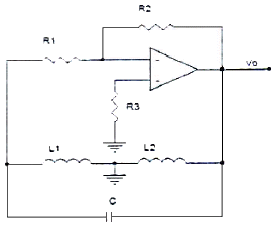
- 콜피츠 발진회로
- RC 발진회로
- 하틀리 발진회로
- 클랩 발진회로
(정답률: 82%)
10. 다음 중 수정진동자의 지지기(Holder)가 갖추어야 할 조건이 아닌 것은?
- 진동 에너지에 손실을 주지 않을 것
- 지지기 및 전극과 수정편 사이에서 상대 위치 변화가 원활할 것
- 외부로부터 기계적 진동이나 충격에 의해서 발진에 지장이 생기지 않을것
- 기압, 온도, 습도의 영향을 거의 받지 않는 구조일 것
(정답률: 74%)
11. 다음 중 복수의 위상에 각각 특정의 데이터 신호를 할당함으로써동일 주파수에서 고능률의 전송을 할 수 있는 변조 방식은?
- 진폭 위상 변조 방식
- 다중 위상 변조 방식
- 차분 위상 변조 방식
- 잔류 측파대 진폭 변조 방식
(정답률: 78%)
12. AM 변조 시에 반송파의 주파수가 600[kHZ], 변조파의 주파수가 7[kHZ]라고 할 때, 점유주파수대역폭은?
- 7[kHZ]
- 14[kHZ]
- 70[kHZ]
- 140[kHZ]
(정답률: 79%)
13. 다음 그림과 같은 AM변조 회로는 어떤 변조인가?
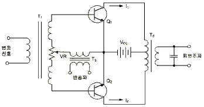
- 베이스 변조회로
- 에미터 변조회로
- 트랜지스터 평형 변조회로
- 컬렉터 변조회로
(정답률: 77%)
14. 다음 중 변조방식과 복조방식의 조합이 잘못된 것은?
- FSK-포락선검파
- DPSK-동기검파
- QAM-동기검파
- QPSK-동기검파
(정답률: 70%)
15. 다음 회로 중 결합 상태가 직류로 구성된 멀티바이브레이터 회로는?
- 비안정 멀티바이브레이터
- 단안정 멀티바이브레이터
- 쌍안정 멀티바이브레이터
- 비쌍안정 멀티바이브레이터
(정답률: 74%)
16. 다음 회로 중 Flip-Flop 회로를 쓰지 않는 것은?
- 리미터 회로
- 분주 회로
- 기억 회로
- 2진 계수 회로
(정답률: 72%)
17. 다음 논리 함수
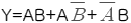
를 간소화한 것으로 옳은 것은?- A+B
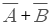
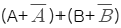
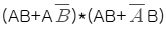
(정답률: 79%)
18. J-K 플립플롭을 그림과 같이 결선하였을 때, 클롯 펄스가 인가될 때마다 출력 Q의 동작 상태는?
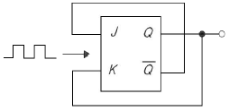
- Reset
- Toggle
- Set
- ∞
(정답률: 79%)
19. 다음 그림은 T F/F을 이용한 비동기 10진 상향계수기이다. 계수값이 10이 되었을 때, 계수기를 0으로 하기 위해서는 전체 F/F을 clear시켜야 하는데 이렇게 하기 위해 빈 칸에 알맞은 게이트는?
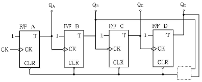
- OR
- AND
- NOR
- NAND
(정답률: 75%)
20. 계산기에서 뺄셈을 보수 덧셈으로 하기 위해서 최종적으로 필요한 보수는?
- 1의 보수
- 2의 보수
- 7의 보수
- 9의 보수
(정답률: 83%)
2과목: 무선통신 기기
21. 정보신호가 m(t)=cos(2πfmt)인 정현파를 반송파 fc를 사용하여 DSB-SC 변조하는 경우 변조된 신호의 스펙트럼으로 옳은 것은?
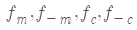
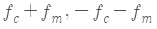
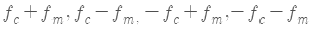
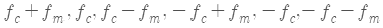
(정답률: 75%)
22. 다음 중 AM 송신기에서 기생진동의 방지 방법에 대한 설명으로 틀린 것은?
- 스켈치 회로를 사용하고 발진기를 A급으로 동작 시킨다.
- 성능이 우수한 발진기를 사용한다.
- 무선주파 회로의 배선을 짧게 한다.
- 증폭단 사이의 차폐를 완전히 하고 접지를 한다.
(정답률: 63%)
23. 3[kHz]대역폭을 갖는 음성신호를 협대역 FM변조한 결과 신호의 중심주파수가 50[kHz]이고, 최대주파수 편이가 20[Hz]라 하자. 이 신호를 2,000배 주파수 체배(Frequency Multiplier)해서 광대역 FM신호를 만들었을 때, 이 신호의 대역폭을 Carson의 법칙에 의해 구한 값은?
- 24[kHz]
- 1[kHz]
- 43[kHz]
- 86[kHz]
(정답률: 64%)
24. 아래 그림과 같이 FM 변조기를 이용하여 PM 변조를 하고자 한다. 괄호에 들어갈 내용으로 적합한 것을 고르시오
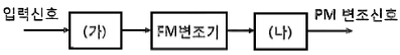
- (가) 없음 (나) 적분기
- (가) 적분기 (나) 없음
- (가) 없음 (나) 미분기
- (가) 미분기 (나) 없음
(정답률: 77%)
25. 다음 그림은 입력신호에서 주파수와 위상을 추출하는 위상동기루프(PPL)를 나타낸다. 괄호에 들어가는 내용의 조합으로 적절한 것은?
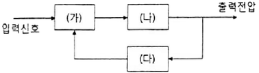
- (가) 위상검출기 (나) 저역통과 필터 (다) 전압제어발진기
- (가) 위상검출기 (나) 전압제어발진기 (다)저역통과 필터
- (가) 전압비교기 (나) 고역통과필터 (다)전압제어발진기
- (가) 전압비교기 (나) 전압제어발진기 (다)저역통과필터
(정답률: 76%)
26. 다음 중 등화기(Equalizer)의 역할로 알맞은 것은?
- 누화를 방지하기 위한 장치이다.
- 송신측과 수신측에서 서로의 신호 레벨을 같게 하는 것이다.
- 잡음의 발생유무를 감지하기 위한 장치이다.
- 감쇠량을 보상하여 주파수 특성을 평탄하게 한다.
(정답률: 65%)
27. 다음의 신호 처리 기술 중 디지털 변조 방법을 옳게 연결한 것은?
- ASK-두 개의 비트 값에 각기 다른 주파수 신호를 대응하여 사용한다.
- FSK-비트 값을 나타내기 위해 위상을 변화시킨다
- PSK-두 개의 비트 값에 각기 다른 진폭을 대응하여 사용한다.
- 16QAM-비트를 나타내기 위해 위상과 진폭을 모두 변환시킨다.
(정답률: 86%)
28. 다음 중 k비트로 구성된 심볼의 M=2k개 심볼 상태를 표현하는데 MFSK에 대한 설명으로 틀린 것은?
- MFSK는 동기식 복조만이 가능하다.
- 직교하는 M개의 주파수 정현파를 사용한다.
- k가 커지면 사용되는 주파수 개수가 지수적으로 증가한다.
- M이 커짐에 따라 사용되는 대역폭이 증가한다.
(정답률: 71%)
29. 다음 중 FSK 방식에 대한 설명으로 옳은 것은?
- 2진 정보를 AM 변조한 것
- 2진 정보를 FM 변조한 것
- 2진 정보를 PM 변조한 것
- 2진 정보를 PCM 변조한 것
(정답률: 88%)
30. 채널 간 간섭 등 급격한 위상 변화에 의한 문제들을 해결하기 위해 QPSK의 위상을 연속적으로 변하도록 하는 변조방식은?
- BPSK
- PSK
- MPSK
- MSK
(정답률: 73%)
31. 다음 중 GPS 코드에 대한 설명으로 틀린 것은?
- P코드는 처음에는 군용이였지만 민간에서도 이용하고 있다.
- 민간용으로는 C/A코드를 사용한다.
- 군용으로는 P코드를 사용한다.
- C/A코드의 정밀도는 10[m] 내외의 정밀도를 갖는다
(정답률: 78%)
32. 다음 중 납 축전지의 단자 전압 변화 원인은?(오류 신고가 접수된 문제입니다. 반드시 정답과 해설을 확인하시기 바랍니다.)
- 외부 충격
- 단자 접촉 불량
- 전해액의 비중
- 양극판 재질
(정답률: 85%)
33. 다음 중 UPS(Uninterrptible Power Supply)의 구성 방식에 대한 설명으로 틀린 것은?
- ON-LINE 방식 : 상용전원을 컨버터 회로에 의해 직류로바꾸고 이를 축전지에 충전하고 인버터 회로를 통해 교류전원으로 바꾼다.
- Hybrid 방식 : 상용전원은 그대로 출력으로 내보내며 축전지는 충전회로를 통해 충전한다.
- LINE 인터랙티브 방식 : 축전지와 인버터 부분이 항상 접속되어 서로 전력을 변환하고 있다.
- OFF-LINE 방식 : 입력 측의 변동된 전원이 부하 측의 출력으로 공급되어 출력에 영향을 줄 수 있다.
(정답률: 84%)
34. 다음 중 전력장치인 수전설비에 해당하지 않는 것은?
- 비교기
- 유입개폐기
- 단로기
- 자동 전압 조정기
(정답률: 81%)
35. 브리지형 정류회로에서 직류 출력전압이 10[V]이고, 부하가 10[Ω]이라고 하면 각 정류소자에 흐르는 첨두 전류값은?
- π/2[A]
- π[A]
- 2π[A]
- 4π[A]
(정답률: 76%)
36. 다음 내용을 나타내는 용어는?
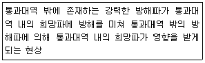
- 스퓨리어스 레스폰스
- 혼변조
- 잡음감도
- 감도 억압효과
(정답률: 72%)
37. LC회로에서 공진 주파수가 1,200[kHz]일 때, 고주파 1[A]가 흐르고, 980[kHz]와 1,020[kHz]에서 1/√2[A]의 전류가 흘렀을 경우, 코일의 Q값은?
- 30
- 40
- 50
- 60
(정답률: 67%)
38. 변조지수가 60[%]인 AM변조에서 반송파의 평균전력이 300[W]일 때, 하측파대 전력은 얼마인가?
- 9[W]
- 18[W]
- 27[W]
- 54[W]
(정답률: 65%)
39. 실효높이가 10[m]인 아테나에 0.08[V]의 전압이 수신되었을 때, 이 지점의 전계강도는 약 몇 [dB]인가? (단, 1[㎶/ｍ]를 0[dB]로 한다.)
- 78[dB]
- 88[dB]
- 98[dB]
- 108[dB]
(정답률: 71%)
40. 전원에서 발생되는 전압변동 및 주파수변동 등의 각종 장애로부터 기기를 보호하고 양질의 전원으로 바꿔서 중요 부하에 정전없이 전기를 공급하는 무정전 전원 설비를 무엇이라 하는가?
- Inverter
- Rectifier
- SCR
- UPS
(정답률: 85%)
3과목: 안테나 공학
41. 다음 중 전파의 성질에 관한 설명으로 틀린 것은?
- 전파는 횡파이다.
- 균일 매질 중을 전파라는 전파는 직진한다.
- 굴절률이 다른 매질을 경계면에서는 빛과 같이 굴절과 반사 작용이 있다.
- 주파수가 높을수록 회절 작용이 심하다.
(정답률: 83%)
42. 자유 공간의 특성 임피던스는 약 얼마인가?
- 50[Ω]
- 75[Ω]
- 377[Ω]
- 600[Ω]
(정답률: 83%)
43. 간격이 d인 두 개의 평행 전극판 사이에 유전율 ε의 유전체가 있을 때, 전극 사이에 전압 Vmcosωt를 가한 경우의 변위 전류밀도는?
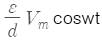
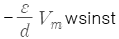
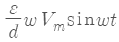
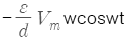
(정답률: 75%)
44. 특성 임피던스가 Z0인 선로에 부하 임피던스 ZL이 연결되었을 때, 부하 단에서 1/4 떨어진 선로 상의 점에서 부하를 바라본 임피던스는?
- ZL/Z0
- Z0/ZL
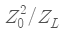
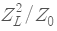
(정답률: 69%)
45. 특성 임피던스가 600[Ω] 및 150[Ω]인 선로를 임피던스 변성기로 정합시키고자 한다. 파장이 λ일 때, 삽입해야 할 선로의 특성 임피던스와 길이는?
- 75[Ω], λ/2
- 300[Ω], λ/2
- 300[Ω], λ/4
- 377[Ω], λ/4
(정답률: 71%)
46. 다음 중 동축케이블에 관한 설명으로 틀린 것은?
- 외부도체가 차폐역할을 하므로 방사손실이 거의 없다
- 평형상태는 불평형이다.
- UHF대 이하의 고정국의 수신용 급전선으로 사용된다.
- 감쇠정수(a)는 주파수(f)에 반비례한다.
(정답률: 71%)
47. 다음 중 급전선의 필요조건이 아닌 것은?
- 송신용일 때는 절연내력이 클 것
- 급전선의 파동임피던스가 높을 것
- 전송효율이 좋을 것
- 유도방해를 주거나 받지 않을 것
(정답률: 71%)
48. 다음 중 안테나의 급전선에 스터브(Stub)를 부착하는 이유는?
- 안테나의 서셉턴스 성분을 제거하여 대역폭을 증가시키기위하여
- 복사전력을 증폭시키기 위하여
- 안테나의 지향성을 높이기 위하여
- 안테나 리액턴스 성분을 제거하여 임피던스를 정랍시키기 위하여
(정답률: 84%)
49. 다음 중 안테나의 Top Loading 효과에 대한 설명으로 옳은 것은?
- 실효길이의 증가
- 고유주파수의 증가
- 방사저항의 감소
- 방사효율의 감소
(정답률: 79%)
50. 자유공간에서 송수신 안테나간의 거리 2[Km]에 10[GHz]의 주파수로 통신링크를 구성하고자 한다. 송신전력이 1[W](+30[dBm]),송수신 안테나 이득이 각각 30[dBi]일 때, 수신전력은 약 얼마인가?
- -14.2[dBm]
- -28.4[dBm]
- -42.6[dBm]
- -68.8[dBm]
(정답률: 58%)
51. 다음 중 빔(Beam) 안테나에 대한 설명으로 틀린 것은?
- 마르코니형, 텔레푼켄형 및 스텔바형 등이 있다.
- 지향성이 예리하다.
- 큰 복사전력을 얻을 수 있다.
- 주로 낮은 주파수(LF 대역 이하)에서 사용된다.
(정답률: 80%)
52. 야기안테나의 소자 중 가장 긴 소자의 역할과 리액턴스 성분은 무엇인가?
- 복사기, 용량성
- 지향기, 유도성
- 반사기, 유도성
- 도파기, 용량성
(정답률: 79%)
53. 다음 중 심굴접지에 대한 설명으로 틀린 것은?
- 대지의 도전율이 좋은 경우에 사용한다.
- 수분을 잘 흡수하는 동판을 사용하여 접지저항을 줄인다.
- 고주파에 대해 큰 효과가 없으므로 가접지 또는 보조접지에 이용된다
- 접지저항을 1[Ω] 이상으로 하려면 접지를 3개~30개 정도의 객수로 적당한 위치에서 접속한다.
(정답률: 76%)
54. 다음 중 다중 접지 방식에 대한 설명으로 틀린 것은?
- 한 점의 접지만으로는 불충분한 경우, 여러 점을 직렬로접속하여 접지 저항을 줄이는 방식이다.
- 안테나 전류가 기저부 부근에 밀집하는 것을 피하고 접지저항을 감소시키기 위해 사용한다.
- 접지 저항은 1[Ω]~2[Ω] 정도이다.
- 대전력 방송국의 안테나 접지에 이용한다.
(정답률: 80%)
55. 송신안테나와 수신안테나의 높이가 각각 9[m]로 동일하게 놓여 있는 경우 직접파 통신이 가능한 전파 가시거리는 약 얼마인가?
- 8.22[Km]
- 12.44[Km]
- 24.66[Km]
- 32.88[Km]
(정답률: 74%)
56. 대지면을 완전도체라고 가정하고, 송수신 안테나의 거리가 충분히 멀리 떨어져 있는 경우, 수평 편파의 송수신 안테나의 높이를 각각 2배 증가시키면 수신 전계강도의 변화는?
- 변화가 없다.
- 약1.414배 증가한다,
- 2배 증가한다.
- 4배증가한다.
(정답률: 66%)
57. 다음 중 도약거리에 대한 설명으로 틀린 것은?
- 단파에서의 불감지대와 연계된다.
- 사용주파수가 높을수록 크게 된다.
- 전리층의 이론상 높이에 반비례한다.
- 사용주파수가 임계 주파수보다 높을 때 생긴다.
(정답률: 58%)
58. 다음 중 전파예보 곡선으로부터 알 수 없는 정보는?
- MUF(Maximum Usable Frequency)
- 주파수의 사용 가능 시간
- 사용 가능 주파수
- 임계 주파수
(정답률: 72%)
59. 다음 중 무선 수신기의 잡음 개선방법으로 틀린 것은?
- 수신 전력의 감소
- 내부 잡음전력의 억제
- 수신기의 실효 대역폭의 축소
- 적정한 통신방식의 선택
(정답률: 77%)
60. 이득과 잡음지수가 각각 G1, F1, G2, F2, G3, F3인 3개의 증폭기를 종속 접속하였을 때, 종합잡음지수 F는?
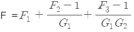
- F =F1+F2+F3
- F = F1=G1(F2-1)+G3(F3-1)
- F =G1×G2×G3(F1+F2+F3)
(정답률: 84%)
4과목: 무선통신 시스템
61. 정합필터(Matched Filter)의 최적 임계값을 바르게 나타낸 것은?(오류 신고가 접수된 문제입니다. 반드시 정답과 해설을 확인하시기 바랍니다.)
- 입력신호 에너지의 1/8 배
- 입력신호 에너지의 1/2 배
- 입력신호 에너지의 1 배
- 입력신호 에너지의 4 배
(정답률: 45%)
62. 다음 무선 수신기의 특성 중 변조 내용을 수신기의 출력 측에서 어느 정도 재현할 수 있는가의 능력을 나타내는 것은?
- 충실도(Fidelity)
- 감도(Sensitivity)
- 선택도(Selectivity)
- 안정도(Stability)
(정답률: 80%)
63. 장파대용 무선 시스템에서 지표파의 전계 강도가 가장 큰 곳은?
- 평야
- 산악
- 시가지
- 해상
(정답률: 83%)
64. ITS는 무엇을 의미하는가?
- 지능형 교통 정보 시스템
- 위치 기반 시스템
- 무선 측위 시스템
- 지리 정보 시스템
(정답률: 82%)
65. 다음 중 위성체에 사용되는 무지향성 안테나의 용도로 적합한 것은?
- 11[GHz] 대역에서 무선측위용으로 사용된다.
- Pencil Beam을 얻을 수 있어 중계용으로 사용된다.
- 위성체의 명령이나 원격제어에 관한 데이터 전송용으로 사용된다.
- Multi Beam용으로 사용된다.
(정답률: 69%)
66. 다음 중 위성통신에서 빗방울에 의한 감쇠되는 흡수성 페이딩을 방지하는데 사용되는 회로는?
- AGC 회로
- AFC 회로
- 디스크램블러 회로
- 편파 보상회로
(정답률: 79%)
67. 위성시스템을 구성하는 구성부와 기능 설명의 연결이 틀린 것은?
- 안테나계 - 위성 신호를 송신, 수신
- 자세 제어계 - 위성의 궤도상 위치 및 자세 제어
- 전력계 - 위성 발사 시 또는 자세 변동 시 궤도 위치 수정
- 중계기계 - 신호를 수신한 후 주파수를 변환하여 재송신
(정답률: 80%)
68. 다음 중 펨토셀이라 불리는 소형 저전력 실내 이동통신 기지국을 도입함으로써 얻을 수 있는 효과가 아닌 것은?
- 트래픽의 분산
- 음영지역 해소를 통한 커버리지 증대
- 핫스팟에서의 데이터 전송 속도 증대
- 매크로 기지국과의 간섭 감소
(정답률: 65%)
69. CDMA 시스템의 호 처리과정으로 맞는 것은?
- 초기상태-유휴상태-접속상태-통화상태
- 초기상태-접속상태-유휴상태-통화상태
- 유휴상태-초기상태-접속상태-통화상태
- 초기상태-접속상태-통화상태-유휴상태
(정답률: 67%)
70. SDTV(Standard Definition TV)에서 HDTV(high definition television)로 발전하면서 해상도가 우수해짐으로 인해 가장 많은 영향을 받는 무선 전송 변수는?
- 전송 주파수
- 다중화 방식
- 안테나 크기
- 대역폭
(정답률: 79%)
71. 지상파 UHD(Ultra High Definition) TV(4K)는 지상파 HD(High Definition) TV(Full HD)보다 몇 배의 해상도인가?
- 2배
- 4배
- 8배
- 16배
(정답률: 83%)
72. 다음의 설명에 해당되는 프로토콜 기능은 어느 것인가?
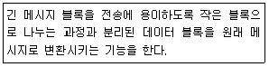
- 분리(separation)와 캡슐화(Encapsulation)
- 세분화()와 재합성(reconstruction)
- 분할과 재결합(reconstruction)
- 분리(separation)와 연결(connection)
(정답률: 76%)
73. 다음 중 통신망 구조를 나타낼 때 통신망의 기능들을 계층으로 나눈 이유가 아닌 것은?
- 각 계층들이 모듈러 구조로 정의되어 호환성이 잘 유지될수 있다.
- 상위 계층 기능을 하위 계층의 기능이 지원하는 경우를 잘 나타낼수 잇다.
- 상위 계층의 정보가 하위 계층에서는 내용으로 전달괴는겨우를 잘 나타낼 수 있다.
- 상위 계층일수록 더욱 물리적으로 실제의 정보 전달 기능을 제시할 수 있다.
(정답률: 73%)
74. 다음 중 통신분야의 표준화 기구가 아닌 것은?
- ETSI
- 3GPP
- ANSI
- ATIS
(정답률: 70%)
75. 다음 중 하위 계층을 사용하여 응용 프로그램간의 통신에 대한 제어 기능을 수행하며, 상호대응하는 응용 프로그램 간의 연결의 개시, 관리, 종결을 담당하는 계층은?
- 응용 계층
- 표현 계층
- 세션 계층
- 전달 계층
(정답률: 69%)
76. 다음의 IEEE802.11 MAC 프레임 구성에서 ㉮,㉯,㉰에 해당하는 것은?
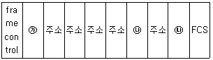
- ㉮ : D/I(Duration/Connection ID) ㉯ : 패리티 ㉯ :데이터
- ㉮:SC(Sequence Control), ㉯ : D/I(Duration/Connection ID) ㉯ : 데이터
- ㉮ : SC(Sequence Control) ㉯ : 패리티 ㉯ : 데이터
- ㉮ : D/I(Duration/Connection ID) ㉯ : SC(Sequence Control) ㉯ : 데이터
(정답률: 63%)
77. 방송국의 안테나공급전력이 5[kW]에서 20[kW]로 증가되면 전계강도는 몇 배가 되는가?
- 16배
- 1/16배
- 2배
- 1/4배
(정답률: 66%)
78. 다음 중 최적의 무선 환경을 구축하기 위한 기지국 통화량 분산 방법이 아닌 것은?
- 섹터 간 커버리지 조정
- 인접 셀간 커버리지 조정
- 기지국 이설 및 추가
- 출력신호를 감소시킨다
(정답률: 77%)
79. 다음 중 시스템 고장에 대한 설명으로 틀린 것은?
- Failure : 하드웨어의 물리적 변화
- Down : 시스템의 근본적 문제로 발생
- Fault : 부품 결함, 환경 변화, 운용자의 실수, 부적절한 설계로 발생
- Error : 다양한 Fault에 따른 잘못된 결과
(정답률: 68%)
80. 다음 중 이동통신망 안테나부의 유지보수 시 점검 대상으로 틀린 것은?
- 철탑의 종류와 구조에 따른 용도 파악
- 안테나의 종류와 사용 용도 파악
- 도파관의 종류와 사용되는 용도 파악
- 통신망 관제센터 내 장비의 용도 파악
(정답률: 66%)
5과목: 전자계산기 일반 및 무선설비기준
81. 다음 중 CPU(Central Processing Unit)의 내부 고성요소로 올바르게 짝지어진 것은?
- ALU, Address Unit, Control Unit
- Instruction, Register, Control Unit
- ALU, Register, Control Unit
- Instruction, Address Unit,Control Unit
(정답률: 77%)
82. 기억된 내용의 일부를 이용하여 기억되어 있는 데이터에 직접 접근하여 정보를 읽어내는 장치는?
- 가상기억장치(virtual memory)
- 연관기억장치(associative memory)
- 캐시 메모리(cache memory )
- 보조기억장치(auxiliary memory)
(정답률: 77%)
83. 수식 “(011100)2+(100011)2”를 계산한 후 8진수로 올바르게 변환한 것은?
- (77)8
- (66)8
- (14)8
- (49)8
(정답률: 79%)
84. 다음 중 문자의 표시와 관계없는 코드는?
- BCD 코드
- ASCII 코드
- EBCDIC 코드
- GRAY 코드
(정답률: 76%)
85. 다음중 페이징(paging) 기법에 대한 설명으로 틀린 것은?
- 가상기억장치 관리 기법의 하나이다.
- 기억장소를 일정한 블록 크기의 단위로 분할하여 사용하는 방법이다.
- 페이지의 크기가 클수록 기억 공간의 낭비가 적어진다.
- 페이지의 크기가 작을수록 페이지 관리테이블의 공간이 더 많이 필요하다.
(정답률: 73%)
86. 대기하고 있는 프로세스 p1, p2, p3, p4의 처리시간은 24[ms], 9[ms], 15[ms], 10[ms]일 때, 최단 작업 우선 (SJF)스케쥴링으로 처리했을 때, 평균 대기 시간은 얼마인가?
- 8.5 [ms]
- 14.5 [ms]
- 15.5 [ms]
- 25.25 [ms]
(정답률: 63%)
87. Job Scheduling에서 우선순위에 밀려서 작업처리가 지연될 경우, 지연되는 정도에 따라서 우선운위를 높여주는 것을 무엇이라 하는가?
- changing
- Aging
- Controlling
- Deleting
(정답률: 76%)
88. 다음 중 모바일 기기용 운영체제가 아닌 것은?
- Android
- IBM AIX
- BlackBerry
- Tizen
(정답률: 75%)
89. 다음 중 오퍼레이팅 시스템에서 제어 프로그램에 속하는 것은?
- 데이터 관리 프로그램
- 어셈블러
- 컴파일러
- 서브루틴
(정답률: 72%)
90. 다음 상대 주소지정방식을 점프(Jump)명령어가 300번지에 저장되어있다고 가정할 때, 오퍼랜드가 A=20이라면, 몇 번지로 점프할 것인가?
- 20
- 300
- 320
- 321
(정답률: 74%)
91. “주파수를 회수하고 이를 대체하여 주파수 할당, 주파수 지정 또는 주파수 사용승인을 하는 것”을 무엇이라 하는가?
- 주파수 사용승인
- 주파수 재배치
- 주파수 회수
- 주파수 분배
(정답률: 76%)
92. 전파를 이용하여 모든 종류의 기호.신호.문언.영상.음향 등의 정보를 보내거나 받는 것을 무엇이라 하는가?
- 유무선통신
- 무선설비
- 무선통신
- 유선통신
(정답률: 77%)
93. 주파수 할당을 받은 자가 주파수 할당을 받은 날부터 몇 년 후에 주파수 이용권을 양도하거나 임대할 수 있는가?
- 1년
- 2년
- 3년
- 5년
(정답률: 54%)
94. 과학기술정보통신부장관이 전파자원의 공평하고 효율적인 이용을 촉진하기 위하여 시행아는 내용이 아닌 것은?
- 주파수 분배의 변경
- 주파수의 공동사용
- 주파수 이용권의 양도.임대
- 주파수 회수 또는 재배치
(정답률: 73%)
95. 의료용 전파응용설비는 몇 와트를 초과하는 경우 허가를 받아야 하는가?
- 30와트
- 50와트
- 80와트
- 100와트
(정답률: 75%)
96. [전파법]에서 전파진응기본계획에 따른 세부시행계획을 시행하는 자는?
- 국립전파연구원장
- 한국방송통신전파진흥원장
- 한국전파진흥협회장
- 과학기술정보통신부장관
(정답률: 71%)
97. 조난통신의 조치를 방해한 자의 벌칙으로 맞는 것은?
- 1년 이상의 유기징역
- 3년 이하의 징역 또는 5천만원 이하의 벌금
- 5년 이하의 징역 또는 7천만원 이하의 벌금
- 10년 이하의 징역 또는 1억원 이하의 벌금
(정답률: 78%)
98. 방송통신기자재와 전자파장해를 주거나 전자파로부터 영향을 받는 기자재에 대하여 적합성인증을 받아야 하는 대상이 아닌 자는?
- 방송통신기자재 제조자
- 방송통신기자재 사용자
- 방송통신기자재 판매자
- 방송통신기자재 수입하려는 자
(정답률: 74%)
99. 다음 중 평균 전력을 나타내는 기호는?
- PX
- PY
- PZ
- PR
(정답률: 78%)
100. 무선설비 기술기준에서 수신설비가 갖추어야 하는 요건이 아닌 것은?
- 선택도가 클 것
- 감도가 클 것
- 내부잡음이 적을 것
- 수신주파수는 운용범위 이내일 것
(정답률: 65%)
중간탭 전파정류회로는 브릿지 전파정류회로보다 높은 출력전압을 얻을 수 있는 이유는, 중간탭 전파정류회로는 전압을 두 배로 증폭시키는 특성을 가지고 있기 때문입니다. 이는 중간탭을 이용하여 전압을 두 배로 증폭시키기 때문에 가능합니다.
반면에 브릿지 전파정류회로는 전압을 그대로 유지하기 때문에, 출력전압은 입력전압의 절반에 불과합니다.
PIV(Peak Inverse Voltage) 정격은 전류가 반대 방향으로 흐를 때 발생하는 최대 역전압을 의미합니다. 따라서 출력 전압과는 관련이 없습니다.
용량성 필터는 맥동률을 감소시키는 역할을 합니다. 이는 정류회로에서 발생하는 맥동을 줄여서, 보다 안정적인 전압을 출력할 수 있도록 도와줍니다.